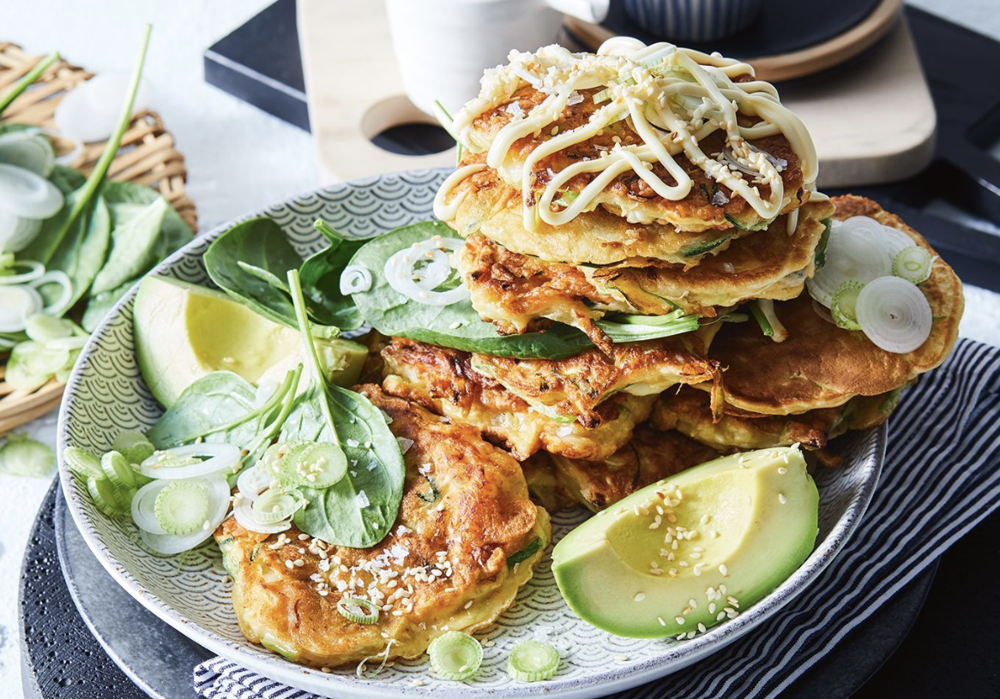

Okonomiyaki with Prawns

Description
"A generous drizzle of Kewpie boosts this dish - the creaminess cuts through
the fried pancake, and complements the prawn perfectly."
Ingredients
- 1 1/2 cups (225g) plain flour
- 1 tsp baking powder
- 4 eggs, lightly beaten
- 2 tbs white (shiro) miso paste
- 1 cup (250ml) cold soda water
- 1/4 white cabbage, finely shredded
- 1 zucchini, coarsely grated
- 3 long green shallots, thinly sliced, plus extra to serve
- 20 medium green prawns, peeled, deveined, halved horizontallly
- 1/3 cup (80ml) sunflower oil
- Avacado wedges, Kewpie mayonnaise, baby spinach & toasted white sesame seeds, to serve
Steps
- Combine flour and baking powder in a large bowl. Make a well in the
centre of the dry ingredients, add egg and miso paste, and gently
whisk in soda water until a smooth batter forms. Add vegetables and
prawns and stir to combine. Season.
- Heat 1 tbs oil in a large frypan over medium heat. Working in batches,
spoon 1/4 cup (60ml) of batter for each pancake into the pan and cook
for 4 minutes each side until golden and cooked through. Transfer to a
plate lined with paper towel and loosely cover with foil to keep warm.
Repeat with remaining oil and batter.
- Serve okonomoyaki warm with avocado wedges, a generous drizzle of
Kewpie, baby spinach leaves, toasted sesame seeds and extra long green
shallots.